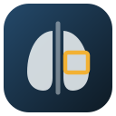

Chest X-ray Triage
A two-stage screening pipeline: a calibrated ResNet-50 gate decides which studies a YOLOv8 detector needs to read.
Status: code, tests and site complete. Trained results pending.
Research project, not a medical device. Outputs are not a diagnosis and must not be used for patient care. Do not upload images that contain patient information.
Summary
- Task: flag abnormal chest X-rays and localize 14 finding types, using the public VinDr‑CXR dataset [1].
- Idea: about 70% of studies show no finding, so a cheap classifier screens every study and the expensive detector runs only on the ones it flags.
- Safety rule: the gate threshold τ is the highest value that keeps sensitivity at 95% on validation data; it is then reported on an untouched test split.
- Reported: AUC, sensitivity and specificity with 95% bootstrap confidence intervals, calibration error, mAP@0.4 with and without the gate, and latency (mean and p95) for PyTorch and ONNX.
- Fairness check: gate performance by patient sex and age band, with small groups flagged rather than over-interpreted.
- External validation: the gate is re-tested unchanged on NIH ChestX-ray14 from a US hospital, and its misses are broken down by finding class.
- Operational impact: measured latency and sensitivity converted into GPU hours, cost and missed studies for a stated hospital volume.
- Engineering: FastAPI service with Grad-CAM, ONNX export, 51 tests that run without a GPU, an end-to-end smoke test, CI, Docker and a model card.
1Problem
- Object detectors that localize findings are the expensive part of a chest X-ray pipeline, especially at the high resolution small lesions need.
- Most studies are normal, so running the detector on every study spends most of the compute on images that need none of it.
- Skipping studies with a fast classifier is only acceptable if that classifier almost never lets an abnormal study through.
- The question this project answers: how much time can a gate save, and what does it cost in missed findings?
2Method
Stage 1: gate classifier
- ResNet-50 [2] pretrained on ImageNet, final layer replaced by one logit; input 512 × 512.
- Loss: binary cross-entropy with
pos_weight≈ 2.4 to offset the 70/30 class balance. - Augmentation: small rotations, shifts, zoom, brightness and contrast. No horizontal flips.
- Training: AdamW, cosine learning-rate schedule, mixed precision; the checkpoint with the best validation AUC is kept.
Calibration and decision
- Temperature scaling [3]:
p = σ(z / T), with T fit by minimizing negative log-likelihood on validation. - τ is chosen on the calibrated validation scores as the highest threshold with sensitivity ≥ 0.95.
Stage 2: detector
- YOLOv8s [4] pretrained on COCO, input 1024 × 1024, 14 classes, horizontal flips disabled.
- Training labels: boxes from three radiologists fused with Weighted Boxes Fusion [5] at IoU 0.4.
- 10% of normal studies are added as background images to reduce false positives.
Explainability
- Grad-CAM [6] on the last ResNet block (2048 × 16 × 16) shows which regions raised the gate score.
3Design decisions
| Decision | Rationale | Alternative considered |
|---|---|---|
| Study is abnormal if any radiologist marked a finding | Maximizes recall for the gate | Majority vote (2 of 3): cleaner labels, more missed findings |
| Fuse radiologist boxes with WBF | One consensus box per finding; no duplicate targets | Keep all boxes (duplicates) or NMS (discards opinions) |
| No horizontal flips | Chest anatomy is lateralized; several classes depend on side | Standard flip augmentation |
| Threshold for 95% sensitivity | Speed must not come from missed findings | Default 0.5, or maximize Youden's J |
| Choose T and τ on validation only | Test results stay unbiased | Tuning on test (data leakage) |
| mAP at IoU 0.4 | Radiologists' boxes vary; matches the competition metric | mAP@0.5 or 0.5:0.95 |
4Interactive figures
- Figures 2–4 run in your browser and use simulated data. They illustrate mechanisms; they are not model results.
- Figure 5 is a calculator: it uses your inputs, with illustrative defaults you can replace with measured values.
- All controls work with a keyboard. Boxes in Fig. 3 move with the arrow keys after you focus them.
Normal studiesAbnormal studiesThreshold τ
What it shows
- Raising τ clears more studies and lowers mean time.
- Past a point, it also clears abnormal studies.
Try
- Set τ for 95% sensitivity, then compare the mean time with the detector-only time.
- Sensitivity
- Specificity
- Sent to detector
- Mean time / study
Radiologist ARadiologist BFused box
What it shows
- IoU = overlap area ÷ combined area.
- Boxes with IoU at or above the threshold merge into their average.
Try
- Drag box B until the fused box disappears, and note the IoU.
- IoU
- Result
T = 1 (raw)Calibrated
What it shows
- T > 1 softens overconfident probabilities.
- Order is unchanged, so AUC is unchanged.
Try
- Set T to 1 and to 3, and compare the probability for logit 2.
eval.json. Simulated data- Compute / day, detector only
- Compute / day, two-stage
- Cost saved / month
- Throughput gain
- Abnormal studies / day
- Cleared by the gate / day
What it shows
- Time saved scales with the share of studies the gate clears.
- The price of that saving is abnormal studies the detector never sees.
- On a GPU at hospital volumes, compute cost is small. The gate matters most where the detector is slow: CPU-only or shared hardware.
Try
- Set detector latency to 2,000 ms to model a CPU-only workstation, and compare compute per day.
- Lower gate sensitivity to 90% and compare the extra studies cleared per day.
src/impact.py computes the same quantities from measured values. Illustrative inputs5Evaluation protocol
- Data: 15,000 VinDr‑CXR training images, each read by 3 of 17 radiologists [1].
- Split: 80 / 10 / 10 train, validation and test at image level, stratified on the abnormal label, fixed seed.
- Selection: best epoch, temperature T and threshold τ are chosen on validation. Test is used once.
- Gate metrics: AUC; sensitivity and specificity at τ; expected calibration error (15 bins) before and after scaling.
- Detector metric: mAP at IoU 0.4 over 14 classes, Pascal VOC all-point interpolation, computed detector-only and two-stage.
- Uncertainty: 95% confidence intervals from 1,000 bootstrap resamples of test studies.
- Subgroups: AUC, sensitivity and specificity by sex and by age band (<40, 40–59, 60+), from DICOM headers. Groups with fewer than 30 studies or 10 abnormal studies are flagged.
- Error analysis: abnormal test studies cleared by the gate, broken down by finding class, with the lowest-scoring cases listed for review.
- External validation: NIH ChestX-ray14 (NIH Clinical Center, US), frontal views, stratified sample. Weights, T and τ are reused without retuning. NIH labels are NLP-mined from reports and use a different label set, so this tests transfer, not like-for-like accuracy.
- Latency: warm-up runs excluded, GPU synchronized before timing, images preloaded to exclude disk I/O; mean, p50 and p95 per study.
- Impact model: GPU time = mean latency × daily volume on one GPU; studies cleared by the gate = volume × prevalence × (1 − sensitivity). Assumptions are printed with every result.
- Reading the impact numbers: at tens of milliseconds per study, GPU cost at hospital volumes is small. The case for the gate is throughput on fixed, shared or CPU-only hardware, not cloud spend; the impact table is there to make that trade-off explicit rather than to claim savings.
6Results
No trained run has been published yet. The table lists every metric that will be reported; values appear automatically when src/report.py publishes results.json from a real run.
| Metric (test split) | Value |
|---|---|
| Gate AUC (95% CI) | Pending |
| Sensitivity at τ, target 0.95 (95% CI) | Pending |
| Specificity at τ (95% CI) | Pending |
| Share of studies sent to the detector | Pending |
| ECE before → after calibration | Pending |
| mAP@0.4, detector only | Pending |
| mAP@0.4, two-stage | Pending |
| Mean and p95 latency, detector only → two-stage | Pending |
| Two-stage latency, PyTorch → ONNX | Pending |
| AUC, sensitivity and specificity by sex and age band | Pending |
| Gate misses by finding class | Pending |
| External validation on NIH ChestX-ray14: AUC, sensitivity, specificity (95% CI) | Pending |
| GPU hours, cost saved and studies cleared by the gate (measured inputs) | Pending |
7Live demo
- Runs the real model through the API on your machine. This page only sends the image to the address you enter.
- Requires trained weights; see section 8.
- Start the API
CLS_CKPT=weights/classifier.pt DET_WEIGHTS=weights/detector.pt \ uvicorn app.server:app --port 8000 - Connect
- Choose an image and analyze it
8Reproduce
- Requirements: Python 3.10+; a GPU for training (a free Kaggle T4 is enough).
- The full run is also available as
notebooks/kaggle_run.ipynb, ormake all. Useconfigs/quick.yaml(make quick) for a first run in about 1–2 hours. python scripts/smoke_test.pychecks every stage end to end on synthetic data in a few minutes.
git clone https://github.com/danghoang2605-ds-ai/chest-xray-triage.git && cd chest-xray-triage
pip install -r requirements.txt
python -m src.data --config configs/default.yaml # labels, WBF boxes, YOLO dataset
python -m src.train_classifier --config configs/default.yaml # stage 1
python -m src.train_detector --config configs/default.yaml # stage 2
python -m src.evaluate --config configs/default.yaml # AUC + CIs, calibration, subgroups, mAP
python -m src.error_analysis --config configs/default.yaml # gate misses by finding class
python -m src.external_eval --config configs/default.yaml # optional: NIH ChestX-ray14
python -m src.benchmark --config configs/default.yaml --half
python -m src.impact --config configs/default.yaml # compute time, cost, studies cleared
python -m src.plots --config configs/default.yaml && python -m src.report # figures, README, this page9Limitations
- Single-country training data. VinDr‑CXR comes from Vietnamese hospitals. The NIH ChestX-ray14 check measures transfer to one US source; it does not replace prospective validation, and its NLP-mined labels limit what it can show.
- Label noise. Radiologists often disagree; the "any radiologist" rule trades noise for recall.
- Small findings. AP for small lesions such as nodules is typically low.
- Single point of failure. A study the gate clears is never read by the detector. Two-stage mAP measures this cost but does not remove it.
- Explanations. Grad-CAM shows where the classifier attended, not that its reasoning is correct.
References
- Nguyen, H. Q. et al. VinDr-CXR: An open dataset of chest X-rays with radiologist's annotations. Scientific Data 9, 429 (2022).
- He, K., Zhang, X., Ren, S. & Sun, J. Deep residual learning for image recognition. CVPR (2016).
- Guo, C., Pleiss, G., Sun, Y. & Weinberger, K. Q. On calibration of modern neural networks. ICML (2017).
- Jocher, G., Chaurasia, A. & Qiu, J. Ultralytics YOLOv8 (2023).
- Solovyev, R., Wang, W. & Gabruseva, T. Weighted boxes fusion: Ensembling boxes from different object detection models. Image and Vision Computing 107 (2021).
- Selvaraju, R. R. et al. Grad-CAM: Visual explanations from deep networks via gradient-based localization. ICCV (2017).